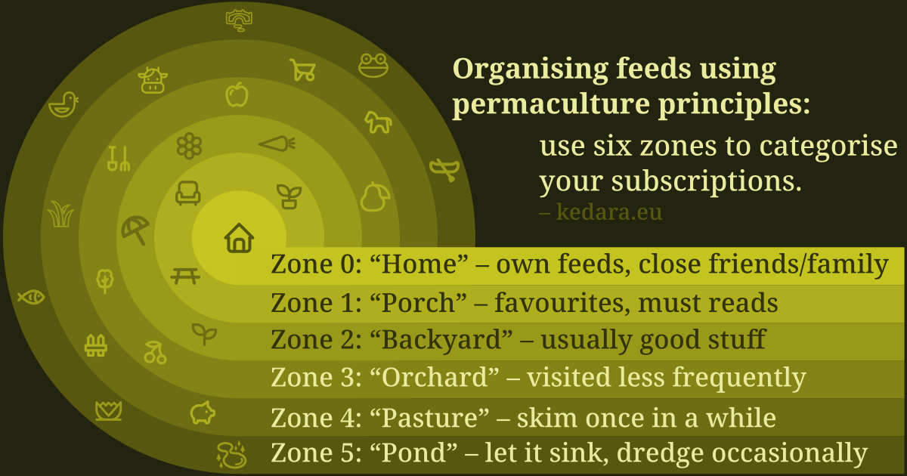
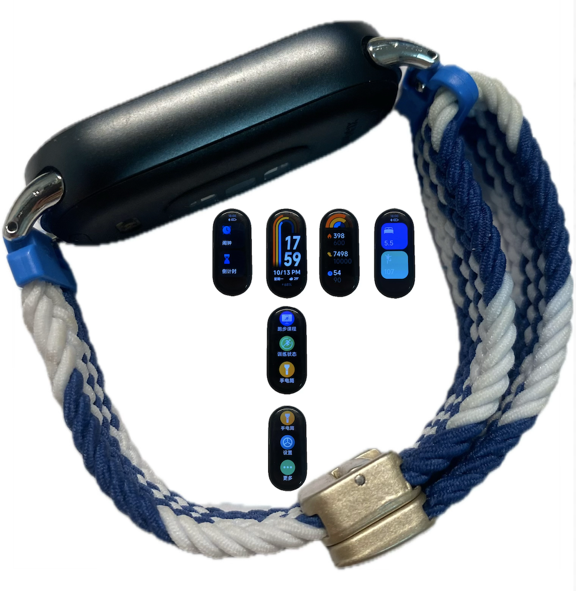

日常#6
牙周问题、订阅流整理、Blaugust 回顾、写作的艰难、小米手环表带
🎶 Best Comedy - The Fur.
牙周问题
近一年的时间里牙齿经常容易流血，之前去看过一次牙周，拍了片，告知要用巴氏刷牙法，开了一瓶漱口水就结束了。漱口水用一阵子是有点改善，但不用了还是老样子，治标不治本。后来 去拔牙，这次去了一家感觉更靠谱的医院，拔牙时又咨询了一下医生，医生说是有些龈下结石，需要清理一下。要先洗牙，洗牙一周之后再约牙周科进行龈下刮治。
洗牙很难约上，需要蹲点抢号，有点懒，抢号一直不太上心。后来牙齿流血情况越来越严重，也恰好看到有号，就赶紧约上了。这是我第二次洗牙了，不过听着刮刀在牙齿上打磨，还是会有点紧张，偶尔碰到比较靠近牙龈的地方也会有些痛。洗牙费用近四百，医保报销一半，剩下一半需要个人支出。洗牙之后牙齿流血情况改善了一些，但还是没有根治。
之后约了牙周的医生，相比洗牙而言，其他口腔科都容易约一些，不过号源也是很紧张，估计看牙齿的人相当多。牙周医生看了，确实需要刮治，告知费用大概两千左右，医保能报销大部分，问我要不要做。尽管费用不便宜，但不做治疗基本不会好转，况且相比健康而言，一些钱不算什么，很干脆地就答应要做了。本来牙龈刮治还要拍牙片和验血的，但我近期拔牙拍了牙片、手上囊肿手术也做了血常规等检查，这些前期的准备我都做完了，所以可以马上就进行刮治。刮治前医生让我含了杯双氧水，没过一阵子，双氧水和嘴里的血液发生反应，产生了很多绵密的泡沫。
医生问我要不要打麻醉，刮治可能会有些痛，不过打麻醉也是需要每颗牙齿都要打，扎下去那一下也是痛的。之前拔牙的时候我也打过麻醉，扎下去的痛其实还好，但我不知道为什么脑子抽了，说可以不打麻醉，可能是嫌麻烦，还要等麻醉生效；可能是觉得医生说可以忍一下，大概不会很痛。
我觉得我是有点头铁的，之前做 胃镜检查 的时候我也没有选择无痛的全麻，而是局部麻醉，也是相当折磨。
但刮治开始后我马上就后悔了，相比洗牙，刮治会更深入牙龈，尖锐的打磨声，磨刀挤入到牙缝之间，仿佛硬要把我的牙缝撑开，碰到牙龈也有种撕裂感，总之非常折磨，刮治的时候我的身体都是紧绷的，双手抓紧自己的身体，眼泪都冒出来了。
刮治过程流了很多血，我觉得牙科医生蛮辛苦的，看着患者满嘴的血，忍受脏臭的牙结石和口气，估计也会觉得有些恶心吧。不知道做了多久，终于做完了，这是第一次治疗，两周之后还要再刮一次，不过医生说下次会轻松点，没这次这么痛。这次治疗费用近九百，不过基本都能医保报销，个人支付很少。
牙周炎是无法根治的，只能尽可能去控制，要按照巴氏刷牙法刷牙，平时吃完东西之后也要用牙线清理，清洁得好的话，一年洗一次牙，大概可以控制症状；如果清洁得不好，就很容易复发，可能两三个月就得洗一次牙。
回头我在小红书找了些巴氏刷牙法和牙线的使用视频，到现在才发现自己刷牙方式错的离谱，我原来的刷牙方式无法清洁到牙龈，也没有覆盖到所有的牙齿表面，就容易积累牙结石，今天的牙周病也是咎由自取。感叹方向才是最重要的，不然花费再多的时间也只是自我感动的努力。
关于巴氏刷牙法和牙线的使用
巴氏刷牙法，需要将牙刷倾斜 45 度对着压根部分，稍微用点力让牙刷进入到牙龈和牙齿之间的缝隙，轻微地震动使得上面的脏污松动，再从根部往外将脏污带出，重复这个动作将所有牙齿不管是外面还是里面都清洁一次。
牙线的话，有牙线和牙线棒两类，我最后选择了有些操作难度的牙线，需要将牙线塞入到牙缝底部，然后贴着牙齿往外提，把牙齿表面的脏污刮出来，也是要清洁到所有牙齿，包括后槽牙。刚开始用牙线真的很不习惯，手指需要深入到嘴巴里，会弄到挺多口水的，有点不雅，最好在家或者卫生间操作。
分享小红书的几个链接：
- 牙医博士教你：牙线上手技巧！
- 牙医说真话：巴氏刷牙法千万要注意这些细节！ （有电动牙刷广告植入）
- 巴氏刷牙法
上面的链接网页上都会重定向到小红书，你可能需要在手机上才能看。
做完龈下刮治之后，牙齿流血的症状改善了很多，现在刷牙还有一点点血，估计还在恢复。牙齿出问题还挺麻烦的，治疗的费用比较高，之后也要注意用正确的刷牙方式，以及习惯牙线的使用，保护好牙齿。
查找印象中的链接
Album#4 - Town 是 The Fur. 的一张专辑，认识 The Fur. 是在整理 Blaugust 订阅流的时候，在一篇博客文章中看到的，当时随便复制到网易云里听，就把页面关了继续整理订阅流。在我写这张专辑分享时，我就想找到这篇文章，看看文章里当时写了什么，而且文章分享的歌曲这么对我口味，我也想找出来以后多关注一下。但是我整理订阅流时看的文章实在是太多了，那篇文章我也只是粗略的翻了一下，文章名字是什么，内容有什么我都不太记得了，找起来还不太容易，找不到我又心痒痒，不过在花费了大量时间后我找到了。
我尝试了几个办法：
- 在我的订阅流阅读器 Elfeed 里搜索 music、song、album、the fur.等关键字，但显然那篇文章标题里没有这些关键字。
- 回忆什么时候看的，尝试找浏览器的浏览记录，但我有定期清理浏览记录的习惯，我正好手贱删除了。也尝试过恢复删除的浏览记录，但正好我也把 Chrome 的记录功能关闭了，也恢复不了。
- 想起来 Elfeed 会拉取全文保存，于是去 Elfeed 保存的内容里进行搜索，但这个博客没有在订阅流里输出全文，所以也搜索不到。
- 又尝试在 Blaugust 的所有博客里翻，凭借不准确的印象找，像是大海捞针，费时费劲，效果很差。
- 回忆当时整理的进度，大概定位了几个可能的博客，遍历每一个博客的域名，然后通过在搜索引擎设置
site:domain Serene Reminder，终于找到了。
这件事给我的启发就是在行动前还是要先思考一下方法，而不是蛮干。
这个过程中，我真希望那些博客能提供一个搜索功能，让我按照关键字搜索博客内容，不过即使不提供搜索功能，倒也可以利用搜索引擎。
有的博客会将读者访问过的链接设置不一样的颜色，在我这次查找中还是有点帮助的。我之前也设置过，但页面里出现太多颜色，我觉得有些杂乱，就放弃了。但这次搜索，让我觉得标记访问过的链接或许某些场景下是有用的，所以我又加上了，颜色用的是 favicon 的颜色，乍一看有点突兀，看习惯了也还行。
订阅流整理
整理完了 Blaugust 的订阅流，本来打算再写一篇 Blaugust 2025 Reflections，但后来还是懒了，也累了。网上冲浪是一件还蛮快乐的事情，但还需要整理摘录的话，就没那么快乐了。像是给自己布置了一个任务，每次打开一个博客，都要仔细阅读感兴趣的文章，还要试图从中找到些什么；像是非要记录些什么才算是看过。这样很花时间，也很累。决定不做摘录之后，我整理起来快了很多，浏览一下感兴趣的文章，归类一下就结束了。
整理过程中，我发现有的博客的订阅地址是「藏」起来的，你很难在一个明显的地方找到订阅地址。我想订阅这些博客，只能尝试在域名后面添加 rss、atom、feed 看能不能找到。
是这些博客不希望被订阅吗？如果不是的话，为什么不把订阅按钮放在一个明显的地方呢？
{kind=link}

之前整理的时候看到了 Organising my feeds using Permaculture principles，这次也是按照里面的方法对订阅流进行了归类。文章借鉴了 可持续农业的区域管理方法 ⸺ 划分了 Zone0 到 Zone5 六个区域，类比到订阅流里，就是自己关注得比较多、看得比较多的，就归类在靠近自己的区域，例如 Zone1；而那些看得比较少，只是想偶尔看看的，就可以放到远一些的区域，例如 Zone5。
这样可以解决两个问题：
自从发现了个人网站的世界后，我的订阅阅读器里关注的独立站点越来越多。为了有效管理这些内容，我最初尝试按主题分类。但很快发现这行不通：大多数个人网站并不局限于某个特定领域 ⸺ 我认为这正是其美妙之处。
于是转而采用按语言分类的方式。这让网站归类变得相对简单（除了少数双语站点）。然而，由于我现在关注着 255 个订阅源，仅分成 「英语」 或 「荷兰语」 两类对缓解信息过载并没有实质帮助。
我试图解决两个 「问题」：
- 产出能力的差异 ：有人每天发布三则短动态，也有人每隔一个月才发一篇长文。高产的作者很快就能填满我的订阅流，而那些更新频率低的则被淹没其中。
- 减轻「未读计数」 带来的压迫感 ：我无法读完所有内容 ⸺ 确实会读完最喜爱作者的全部文章，但仍希望能关注其他人的动态。
靠近自己的区域，如 Zone1，放在里面的博客都是自己经常看的，Zone1 的变化一般也不会很大，在阅读的时候可以按照 Zone1 进行过滤，关注的博客就不会淹没在海量的订阅中，新增的文章数量也不会很多，也不会有看不完的焦虑和压力。
当 Zone1 的内容看完了，想摄入更多信息的时候，就可以将阅读范围扩大到 Zone2。越往后面的区域，看的频率就越低，偶尔想看的时候，可以通过标题大概判断感不感兴趣，感兴趣就看看。
不同区域里的博客也是动态变化的，例如放到最后一个区域里的，可能是没啥兴趣的，时间久了就可以考虑移除。放到 Zone4 的是一些可能感兴趣，如果在阅读时觉得很有趣，想多关注，就可以考虑将其往前挪动一个区域，增加它被看到的频率。
新增订阅流的时候，如果已经能判断放到哪个区域的，就归类进去；如果还无法判断，可以先放到未分类的区域里，偶尔翻看一下，感兴趣就挪动到对应区域，不感兴趣干脆就删了。
我使用这个方法的时间还不长，目前用着我觉得还不错，确实能比较好的解决了作者说到的两个问题。我在 黑洞里 新增了 Blogroll，如果你感兴趣可以看看。
除了 Blogroll，我还新增了 Tools 页面，放一些我可能用到的东西。
Blaugust 回顾
Blaugust 八月底就结束了，说起来八月份并没有很积极地参与，每天都产出一些文字对我来说还是比较困难的，一方面是不知道写些什么；另一方面是把脑子里的东西写出来对我而言并不容易。
看到 Blaugust 上其实也有不少讨论的话题，例如关于博客是否应该有留言系统，很多人写了他们的看法，我之前也写过 移除博客的留言，我也将部分看到的文章整理到里面了。 Blaugust 这样的讨论蛮好的，提出一个话题，然后大家都写点文章分享想法，相互引用答复，给人一种大家一起参与一个活动的感觉。
不过最开始订阅了 owl 整理的 Blaugust 2025 OPML，一下子新增了上百条订阅流，2000 多的文章，真是吃不消。看吧，实在没那么多时间；不看吧，又好奇别人写什么，怕错过，纠结、难受。
博客里我比较喜欢生活类的、音乐类的、文章我大多感兴趣的、博客设计好看的或有趣的、一些非英文的、一些未接触过的领域的，移除了一些更新频率很低、大量是关于游戏的、更新特别频繁我又不太感兴趣的。
看的过程还算有趣，能翻到一些设计不错的博客和内容，有的也可以借鉴；但也会焦虑，没有太多精力去对每一个博客都认真看一遍，急着快速判断一个博客，急着看完一篇文章。
八月写了 9 篇文章，也算是达成了自己最开始设定的 5 篇，不过只有 4 篇是关于 Blaugust 的，最后评奖的时候只获得了一个新人奖，没有得到一个月写 5 篇的铜奖，大概评判的时候只计算包含 Blaugust 的内容吧。
下一年我会不会参与呢？
我想我会继续参与的，一个私心是借助 Blaugust 扩大博客的曝光度，通过 Blaugust 接触更多不一样的人也是很有趣的。
明年争取获得一个铜牌吧。
写作艰难
前阵子看完了乔布斯传，打算写一篇摘录和读后感。
我是在 kindle 上看的，很老的 kindle 了，没有导出的功能，光是整理摘录就花费我了大量的时间。
关于纸质书的内容的摘录，之前在 摘：《我是个怪圈》| 素生 中问过素生是如何做摘录的，我稍做整理：
- 有的电子阅读器，如文石，可以将划线内容一键导出。
- 在手机看的内容，可以在看的时候就复制到笔记 APP 中。
- 纸质书可以将摘录的部分拍照，通过一个叫「白描」的 OCR 软件进行识别。「白描」买断之后，可以无限量地批量处理图片，识别准确度似乎也还不错。
- （我补充的）纸质书也可以找到对应的电子书，搜索对应的内容进行复制。
我这次摘录采用的就是找电子书，然后搜索关键字复制。我从 Zlibrary 找到对应的书，下载了 PDF 版本，然后用浏览器打开，就可以在里面搜索文本。
能够搜索 PDF 的文字其实很不容易，见 Zine#38::PDF to Text, a challenging problem
尽管是一个可行的方法，我是不太推荐的，因为很费劲。我在 kindle 上的标记应该有百来条，每次都需要搜索、复制、格式化，非常花时间，整理到后面我已经后悔了，感觉花费这么大量的时间做一件如此无聊的事情不值得。摘录下来有意义吗？我会经常看吗？如果我都不怎么看，为什么要耗费这么多时间精力去做呢？有这个时间，我干点别的不好吗？不过既然都做了一半了，付出了不少 沉没成本，还是咬咬牙做完吧，至少最后得到一个完整的摘录，也算是一种圆满。
不禁想起了 Zine#42::Read to Forget | Mo's Blog，阅读就是为了忘记，何必大段大段摘录和标记，反正又不会经常看。
花费不少时间完成摘录后，我开始写感想，虽然脑子里经常会冒出一些想法，但是等坐在电脑前写的时候却很难流畅的表达出来，写起来磕磕碰碰，像是便秘了一样。很多句子写出来也觉得啰嗦，读起来不够通畅，不够言简意赅。
一种可行的方法可能是 David Perell 提出的 The Islands and Bridges Strategy，脑子里的想法可能不够清晰，有些模糊，可以先将想到的写下来，它们就像是一个个孤岛，当孤岛多了之后，就容易发现它们之间的关系，再进行编辑调整，将它们用「桥梁」连接起来。想法可能是模糊的，先尝试写下来，或许写着写着它们就会变得越来越清晰。
总之，菜就多练吧，多看书，多写。
对我而言写博客还是挺花时间的，时间都花在写博客上，就没时间用来做别的事情了，例如那些一直想学、想折腾的东西。之后我或许会放慢博客的更新， 更多时间去做一些想做的事情，摄入更多内容丰满自己，这样才能产生更多有趣的内容。
Webmentions
给博客添加 Webmention 已经有一段时间了，收到的 mention 并不多。
- 给博客添加 Webmention 中有一条，是一位读者看到后觉得有趣，发了一条测试的。
- 我的博客设计 有两条，是同一个读者的两篇文章，链接了我的这篇文章。这两篇文章我都去看了，是作者关于自己博客搭建的一些记录。
尽管收到的不多，但我还挺开心的，也更喜欢 Webmention 这种方式。别的文章链接了我的文章，知道有人看、可能对别人有用，蛮开心的；哪怕是批评，有人愿意写段内容链接过来，我也很愿意看。
不过有点遗憾的是，发送方缺少一些 microformats 标记，无法展示他们的头像、内容，看起来有点枯燥。
辣椒炒肉
做了几顿辣椒炒肉了，做出来还算满意。
材料：
- 湘妃香软辣椒
- 猪梅花肉（不肥，比较嫩）
- 蒜
- 豆豉
做法：
- 梅花肉切片，加适量生抽、蚝油、老抽（上色）、淀粉、油（表面封油，避免水分流失），搅拌均匀，腌制 15 分钟。（腌肉万能配方，看了很多小红书食谱，腌肉基本就是这些东西）
- 辣椒切段、切片；蒜切片；豆豉稍微洗一下切碎。
- 热锅，不放油，把辣椒丢进去干煸，直到辣椒表面出现褶皱；过程可以加点盐，让辣椒里的水分析出。目的是让辣椒炒的时候容易入味，不过这个过程可能很呛。
- 重新起锅，油热后把蒜片、豆豉丢进去炒香，加入辣椒，加入肉翻炒，直到肉变色熟了。担心不够味道可以再补点生抽。
可能是腌制过的原因，肉吃起来都挺嫩的，不会柴。豆豉很关键，会给这道菜增添不少香味。很下饭，建议多煮点米饭。
小米手环
小米手环的原来的表带断了，质量有点差呀。重新买了一条蓝白编织带，表扣是磁吸的，我还蛮喜欢。编织带有弹性，更容易贴紧手腕，缺点是湿水了不容易干；磁吸用起来很方便，吸的挺牢，啪嗒一下也会有种严丝合缝的爽感，虽然只是一个很小的变化，但相比找准表带孔按进去，磁吸更简单，体验上好了不少。
小米手环也有不少功能，但大多数我都不太关注，例如心率、血氧、压力值等，我只关心睡眠、当前的运动状态。
所以我调整了一下手环的展示：
{kind=link}

- 将大部分我用不上的功能都隐藏
- 表盘亮起看时间、日期、天气、小彩虹（卡路里消耗、步数、中高强度时长）
- 左滑是闹钟和倒计时，需要倒计时的时候很方便
- 右滑是小彩虹详情，再右滑是睡眠和元气值（一个运动后会累加的值）
- 所以左右滑动就四个页面循环：闹钟和倒计时 - 表盘 - 小彩虹详情 - 睡眠和元气值
- 从表盘下滑，就几个常用功能：跑步课程、训练状态、手电筒、设置、更多（几个超低频使用的功能）
原来左右滑动和下滑的内容太多，会有点心智负担，简化后我自己用起来还比较满意。
空洞骑士
空洞骑士通关之后就玩得不多了，一个游戏通关后，我对这个游戏的兴趣就会直线下降，像是长跑过了终点线，冲过终点就不想动了，虽然还有不少可以探索的内容。玩塞尔达也是这样，虽然海拉鲁还有很多没探索的地方，但一旦我打完盖侬，游玩兴趣就会降低很多。
通关之后，就失去了那种探索的心情了，也不知道该去哪里，不知道怎么继续推进。我知道如果我仔细把所有地图重新探索一遍，我可能会发现隐藏入口，找到一些关键技能，但想想就有点累。索性还是查了下攻略，看看一些关键技能去哪里获取、后面应该要去哪里。
看了攻略，去王国边缘击败大黄蜂拿到了王之印记、有了印记又可以去深渊，看到了很多长得和我一样的白色躯壳和黑色灵魂的「兄弟」，在深渊获取了暗影斗篷，终于可以穿过那些黑色屏障，去到了王后花园，被大螳螂虐惨了，还没打过；回去小镇，发现可以打「 无敌的、勇猛的、性感的、神秘的、迷人的、神气的、勤勉的、强势的、华丽的、激情的、可怕的、漂亮的、强大的灰色王子左特」，打不过，我承认你很无敌。
暂时没有太多玩的欲望了，让它积灰一阵子吧。
电脑上 用 Goolge 搜索空洞骑士 还有彩蛋，可以玩玩看 (≖ᴗ≖๑)